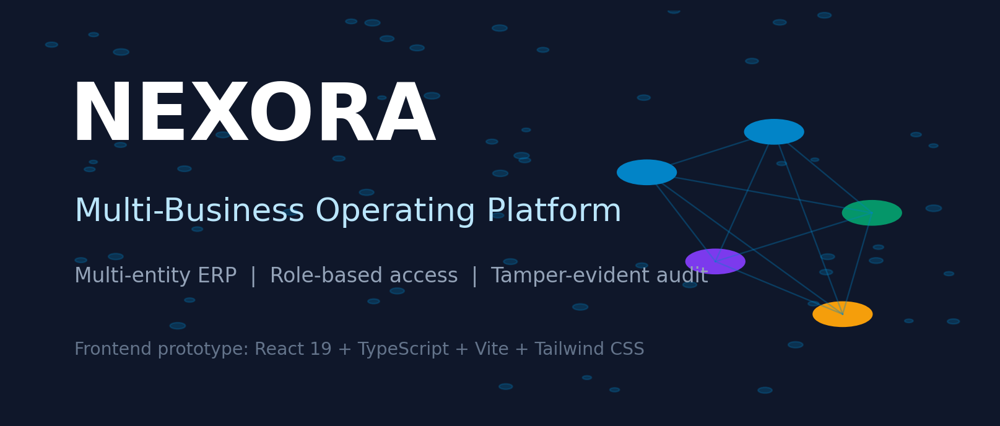

Articles & Projects / 01
NEXORA — Multi-Business Operating Platform
One workspace for multiple businesses, connected operations, and accountable decisions.

Running several businesses means moving between different teams, currencies, records, and approval processes. NEXORA explores how those separate operations can fit into a shared workspace while preserving each business’s identity and access boundaries.
The project is a browser-based ERP frontend prototype. It brings together a group overview, entity-specific workspaces, operational modules, and governance workflows. Its seeded companies and transactions demonstrate the experience; they are fictional examples rather than live business records.
1. A group view with room for each business
The Group Command Center gives group-level users a consolidated view of multiple entities. Each business also has its own operational context, including its currency, modules, and records. The demo covers manufacturing, retail, and advisory services across three example companies.
This structure makes it possible to explore two related questions: how an individual company is operating, and how the group looks as a whole. Entity switching is central to the interface, so users can understand which business they are working in before acting on its data.
2. Connected operational workflows
NEXORA groups finance, inventory, sales, procurement, and people operations into a common application. The finance area includes accounts, journals, and customer and supplier invoices. Other modules explore warehouses, purchasing, payroll, leave, and approvals.
The intercompany workspace models transactions between entities. A trade creates linked records on both sides, supporting balance comparison, reconciliation, dispute handling, and group-level eliminations. Nexora Studio extends the concept with onboarding templates for different types of business.
3. Governance as part of the experience
Access Passport demonstrates entity access requests, approval states, and time-limited access. Role and field-level controls explore how different people should see and use the same system. A purchase-order workflow also illustrates separation of duties by preventing the creator from approving their own order.
Audit Vault uses a SHA-256 hash chain to demonstrate tamper detection, with a verifier and a tampering simulation. These are learning and interface features in a client-side prototype. Because the browser owns both the data and the code, they do not provide the protection of a server-enforced permission system or a protected audit store.
4. How the prototype is structured
The interface uses React, TypeScript, Vite, and Tailwind CSS, with Lucide icons and Motion for interaction. An application shell and shared provider coordinate the active entity, role, and module state. Seed data and localStorage support the demonstration without a backend.
Modules connect through shared state and workflows instead of calling one another directly. This keeps the prototype’s responsibilities understandable and provides a starting point for introducing real services later.
5. The path beyond the prototype
The documentation identifies a substantial production roadmap: a backend API, a persistent database with tenant isolation, real identity and session management, server-side authorization, and a protected append-only audit system.
Financial workflows would also need rigorous accounting rules, reconciliation, period closing, currency handling, reporting, and automated validation. NEXORA’s current contribution is a connected product experience that makes those future requirements visible and reviewable.